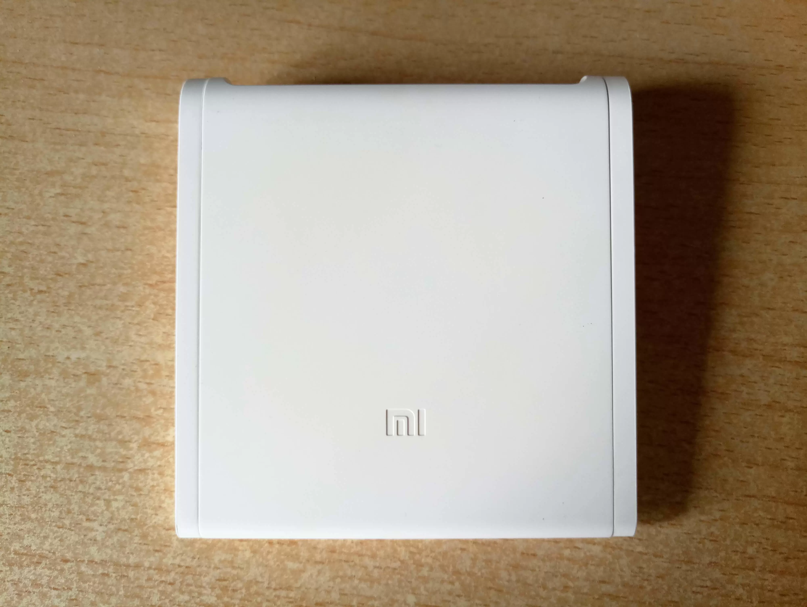
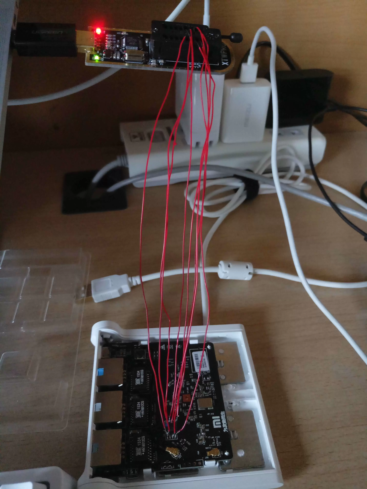
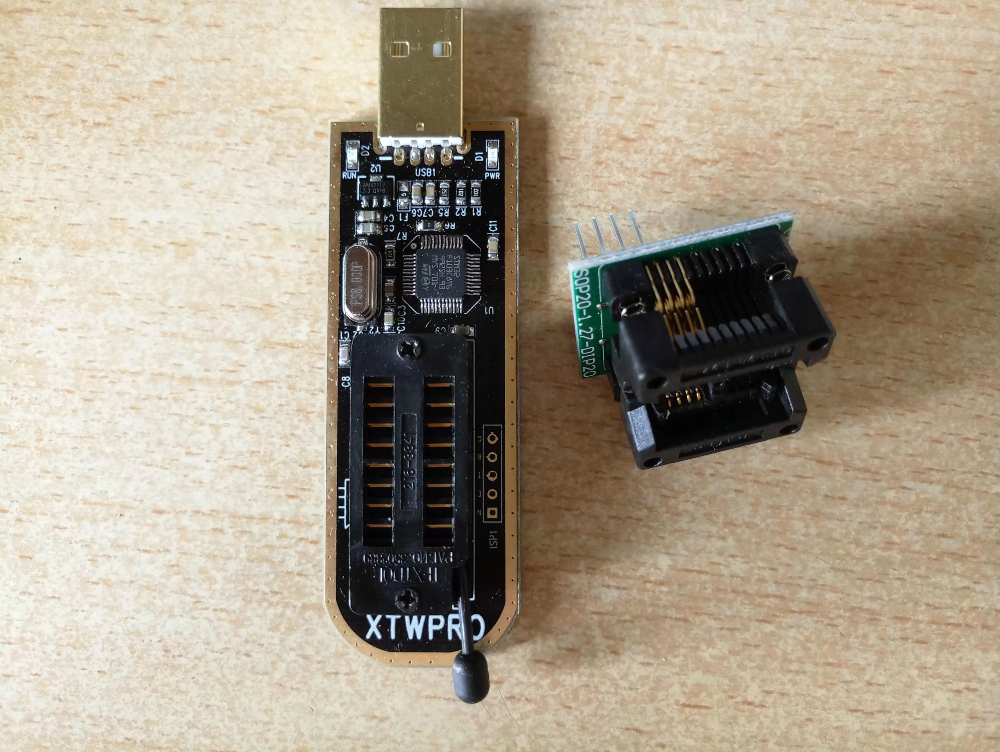
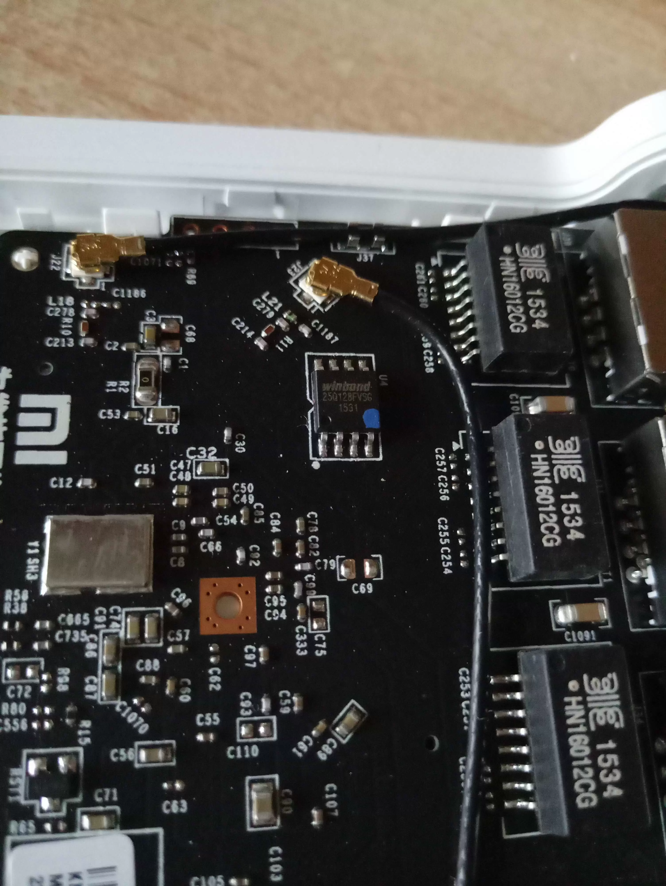
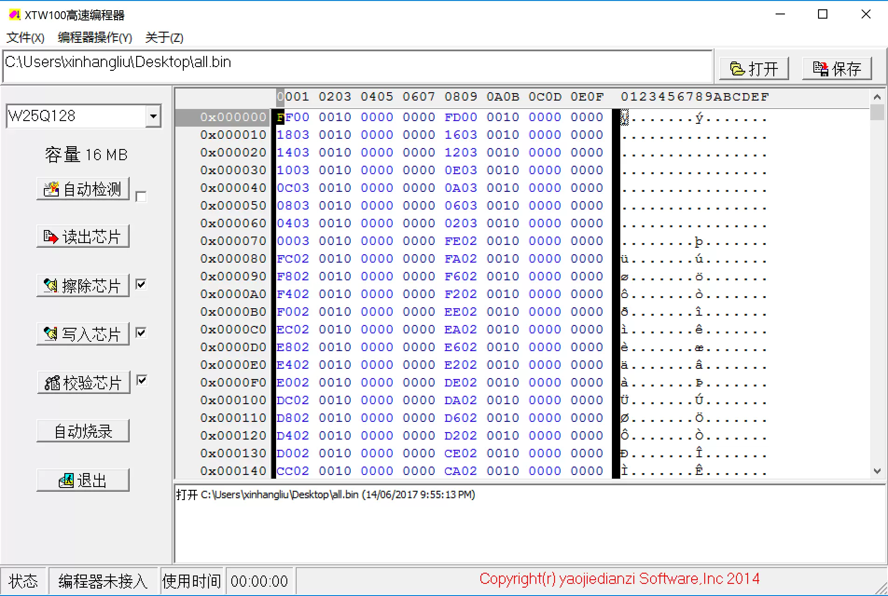
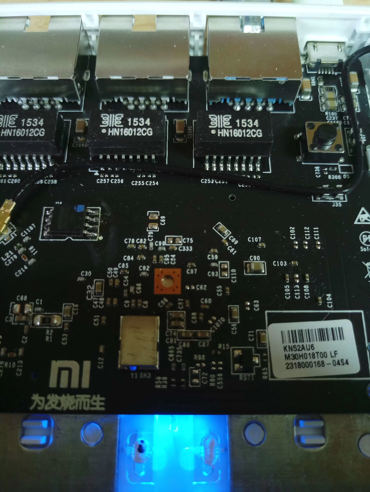

编程器刷固件，救砖小米路由器青春版
刷错包了，路由器报废。最后用编程器救回。

这台小米路由器青春版是在 2015 年 9 月买的，不说别的，做工、用料挺好的，用到现在还是很新。所以当它被我刷砖之后，我很是可惜。
说说为什么要救它
一个原因就是上面说的：可惜。向来对外观完好的东西下不了狠手，如果不小心磕出个大坑，不用等它坏，我自己都得嫌弃它。
在它坏了的这段时间里，为了让小服务器再次运行起来，我买了个二手的小米路由器 mini，一直以为青春版和 mini 是一样大的，到手才发现青春版才是真迷你，足足小一圈。这让我觉得救它更有必要。
青春版没有 USB 口，被我刷砖之后，唯一的办法就是拆机，用编程器刷写 flash。林林总总算下来，买装备修理它花费的钱差不多可以买台新的。即使这样，我还是打算救它。因为校园网，买路由器必须要考虑 L2TP 能否登录的问题，目前我只知道小米路由器的固件是可以正常登录 L2TP 的 VPN 的，对于其他牌子的路由器不了解，这也是我第二台路由器选择小米路由器 mini 的原因。OpenWrt 肯定能够实现 L2TP 客户端登录，但是对这个我就更不了解了。如果能把青春版修好，那么就可以在它身上进行测试。搞定了 L2TP 的问题，以后选择路由器就没有这么大的局限性了，可以更多地往性能方面考虑。
救砖准备
必要的装备有：
- 编程器：XTW100
- 转接座
- 电烙铁
一开始我只买了一个编程器，然后用飞线直接连接板子上的芯片，但是一直刷不进去。可能是板子上的电路有影响、或者接线接的不好：

编程器和转接座就是下面这东西：

开始救砖
拆卸 flash
小米路由器青春版都是卡扣结构，可以无损拆装，这点不得不说设计得很好。卸下后面板，就可以看到 16 M flash 芯片，牌子是 winbond，型号是 25Q128FVSG。

用电烙铁把芯片焊下来，这一步挺折磨人的，焊了老半天终于拆下来，幸好没有伤到其他部分。
刷写 flash
电脑要事先安装好编程器的驱动，一般卖家都会给。需要注意的是，高版本的 Windows 需要关闭数字签名认证，否则驱动装不上去。装好之后，能够识别编程器即可。
将拆下的 flash 用转换座连接到编程器，连接电脑，就可以正式开始了。
刷之前一定要用编程器备份 flash 里面的固件！识别芯片之后，选择 “读取芯片”，然后将读取出来的文件 “保存”。这一步不可省略，因为尽管备份出来的固件是坏的，但是里面包含了出厂时的无线校调信息、SN、MAC 地址等，都是独一无二的。SN 和 MAC 地址还好办，可以从包装或贴纸上面找到。但是原厂的校调信息如果没了，对信号会有影响。只要做了备份，到时候可以将里面的信息提取出来替换到其他固件里。我也是太天真，一上手就给它擦除了，后悔莫及。
什么样的固件才能刷，这也是非常重要的问题。只有编程器固件刷进去才有用。编程器固件里面包含了 bootloader、firmware、art 等路由器所需的所有内容，如果单单刷个升级包，可想而知，连 bootloader 都没有，怎么启动嘛。判断是不是编程器固件一个简单的办法是看大小。它正好是 flash 的大小，比如小米路由器青春版的是 16 M。做过备份就可以发现，备份出来的文件大小也是 16 M。如果这个备份本身是好的，那么你再把它刷进去就能完全恢复之前的状态。

刷了小米官方的开发版包之后，路由器灯都不会亮。查了查，终于发现是固件的问题，然后反应过来忘记备份了。最后在小米论坛里找到了别人提供的备份包。擦除、写入、校验，装好芯片，路由器复活了：

用十六进制编辑器修改别人包内的 SN、MAC 地址等，改成自己的，以免影响别人。校调信息已经刷没了，也不能去考虑了。
刷 Pandorabox
有了编程器，这回真的可以放心大胆地刷路由器了。将路由器设置好并做了备份之后刷入 Pandorabox，在 mini 的帮助下，青春版顺利联网，按照别人的方法也解决了 L2TP 登录的问题。
Install
需要安装这些模块。
- xl2tpd
- kmod-l2tp
- ppp-mod-pppol2tp
xl2tpd 需要手动安装，下载地址
$ opkg install /path/to/xl2tpd
Fix
- 把
/lib/netifd/proto中的l2tp.sh替换为 dangowrt/…/files 这里的 - 将
/lib中的libc.so.0做个软链接到/lib/libc.so.1:$ ln -s /lib/libc.so.0 /lib/libc.so.1
Settings
- 进入 Pandorabox 设置界面，在
网络 > 接口里添加新的l2tp接口，防火墙区域修改为WAN - 修改
MTU为 1452 - 在
网络 > DHCP/DNS取消勾选重绑定保护（丢弃RFC1918上行响应数据）